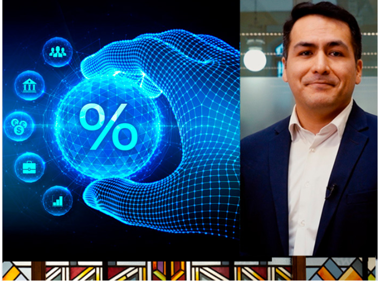
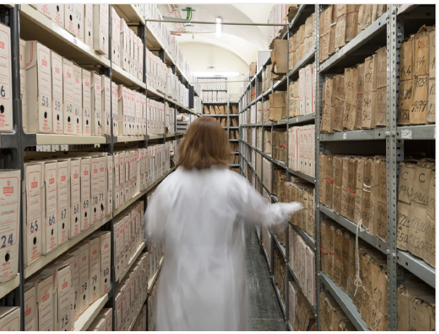
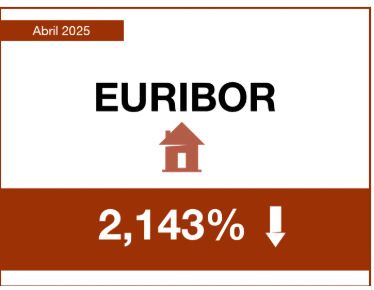
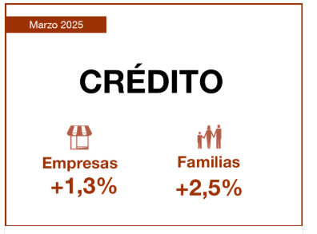

¿Cómo influyen los tipos de intrés en la oferta de crédito?
Blog del banco de España. Serie Enfoque. VideoBlog
06/05/2025

Nuevos talleres-visita al Archivo Histórico del Banco de España
Semana de la Administración Abierta 2025
06/05/2025

La financiación a las empresas creció el 1,3% y a las familias el 2,5% en marzo
05/05/2025
Ver artículo